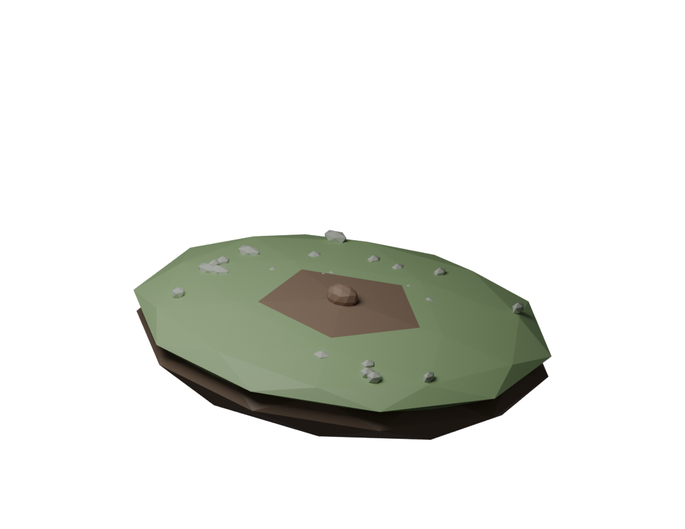

A LITTLE FOCUS. A LITTLE GROWTH.
Make room to grow.
One quiet session at a time. Your forest will follow.
TIME TO PUT DOWN ROOTS
25:00
A fresh start, just for you.✧ Small steps count.
YOUR LITTLE SANCTUARY

Take your time. Good things grow slowly.CHAPTER 01
SeedA small beginning
Every forest starts with a single seed.
SeedSprout · 1Tree · 4Forest · 12
Your first completed session brings a sprout to life.
ROOTED IN YOUR EFFORT
Your growing story
0 sessions planted0 minutes of focus